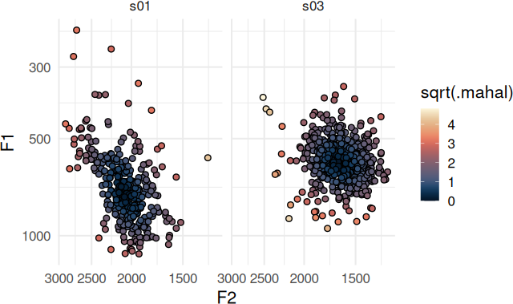
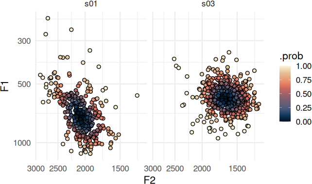
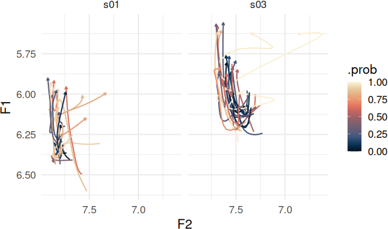
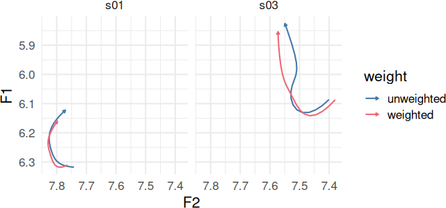

Theme setup
theme_set(
theme_minimal(
base_size = 16
) +
theme(
palette.colour.continuous = as.character(color(palette = "lipari")(50)),
palette.color.discrete = color(palette = "bright")
)
)Quick Overview
Stanley (2022) proposes an order of operations for sociophonetic analysis as follows:
- Identify allophone categories.
- Identify outliers by allophone category.
- Carry out speaker normalization.
It’s beyond the scope of tidynorm to define a pipeline for identifying allophone categories, since these will be extremely language, dialect, and label-set specific. I would recommend reviewing the general purpose dplyr::case_when() and dplyr::recode_values(), or joeyr::code_allophones() for this step.
The second and third steps can be achieved in tidynorm by
- using
identify_outliers(),identify_track_outliers()oridentify_dct_outliers()to add an.outliercolumn to your vowel data frame. - passing the
.outliercolumn to.excludein your normalization function.
Here is how identify_outliers() can be incorporated into a workflow normalizing point measures.
speaker_data |>
identify_outliers(
# Use F1 through F3 to identify outliers
F1:F3,
# Identify outliers within speaker and
# within vowel class
.by = c(speaker, plt_vclass),
# The probability level beyond which
# rows are marked as outliers
.level = 0.95
) |>
norm_nearey(
F1:F3,
.by = speaker,
# exclude rows marked as outliers
.exclude = .outlier,
) ->
normed
#> Normalization info
#> • outliers identified along `F1`, `F2`, and `F3`
#> • grouped by `speaker` and `plt_vclass`
#> • outlier probability level: 0.95
#>
#>
#> Normalization info
#> • normalized with `tidynorm::norm_nearey()`
#> • normalized `F1`, `F2`, and `F3`
#> • normalized values in `F1_lm`, `F2_lm`, and `F3_lm`
#> • grouped by `speaker`
#> • within formant: FALSE
#> • exclusion: .outlier
#> • transformation prior to normalization: log
#> • (.formant - mean(.formant, na.rm = T))/(1)Both
identify_track_outliers()andidentify_dct_outliers()require a.token_id_colargument.identify_dct_outliers()requires a.param_colargument.
It’s worth noting that passing an expression to .exclude only excludes data from the calculation of the normalization parameters. All data points get normalized, so to remove outliers from the rest of your analysis flow, you’ll need to do some additional filtering.
Details
General Info
The family of outlier identification functions add three new columns the input data frames:
.mahal-
The squared Mahalanobis distance.
.prob-
The probability of observing a value of
.mahalthis extreme or less. Based on the cumulative chi-squared probability distribution. .outlier-
A logical vector indicating whether the vowel token exceeded the probability
.levelspecified.
The Mahalanobis distance can be thought of as a multi-dimensional z-score. For example, the two speakers in speaker_data have very different distributions for their [æ] vowel, and the outlier status for each token is specific to the shape of the distribution for each speaker for each vowel.
speaker_data |>
identify_outliers(
F1:F2,
.by = c(speaker, plt_vclass)
) |>
filter(
plt_vclass == "ae"
) ->
ae_identified
#> Normalization info
#> • outliers identified along `F1` and `F2`
#> • grouped by `speaker` and `plt_vclass`
#> • outlier probability level: 0.99Plotting Code
ae_identified |>
ggplot(
aes(F2, F1)
) +
geom_point(
aes(fill = sqrt(.mahal)),
shape = 21
) +
scale_y_continuous(
trans = c("log10", "reverse")
) +
scale_x_continuous(
trans = c("log10", "reverse")
) +
expand_limits(
fill = 0
) +
facet_wrap(~speaker)
The .prob column is based on the chi-squared cumulative probability density function with degrees of freedom equal to the number of data dimensions.
Plotting Code
ae_identified |>
ggplot(
aes(F2, F1)
) +
geom_point(
aes(fill = .prob),
shape = 21
) +
scale_y_continuous(
trans = c("log10", "reverse")
) +
scale_x_continuous(
trans = c("log10", "reverse")
) +
scale_fill_continuous(
limits = c(0, 1)
) +
facet_wrap(~speaker)
DCT and Track Outlier Identification
If you have a data frame of DCT coefficients by formant, identify_dct_outliers() will treat each DCT parameter for each formant as a data dimension over which the Mahalanobis distance is calculated. For identify_track_outliers() each formant track first has the DCT transform applied, and then the Mahalanobis distance is calculated in the same way as identify_dct_outliers().
speaker_tracks |>
identify_track_outliers(
F1:F2,
.by = c(speaker, plt_vclass),
.token_id_col = id,
.time_col = t,
# DCT order
.order = 5,
.pre_trans = log,
.return_dct = TRUE
) |>
filter(plt_vclass == "ey") ->
ey_identified
#> Normalization info
#> • outliers identified along `F1` and `F2`
#> • grouped by `speaker` and `plt_vclass`
#> • outlier probability level: 0.99Plotting Code
ey_identified |>
reframe_with_idct(
F1:F2,
.by = c(speaker, id),
.param_col = .param
) |>
ggplot(
aes(F2, F1)
) +
geom_path(
aes(
color = .prob,
group = id
),
arrow = arrow(
type = "closed",
length = unit(0.1, "cm")
)
) +
scale_color_continuous(
limits = c(0, 1)
) +
scale_x_reverse() +
scale_y_reverse() +
facet_wrap(~speaker)
Extended uses
It’s possible to use either the .mahal or .prob columns to calculate weighted means.
Plotting Code
ey_identified |>
mutate(
.inv_prob = 1 - .prob
) |>
summarise(
.by = c(speaker, .param),
across(
F1:F2,
list(
weighted = \(x) weighted.mean(x, .inv_prob),
unweighted = mean
)
)
) |>
pivot_longer(
starts_with("F")
) |>
separate(
name,
into = c("formant", "weight")
) |>
pivot_wider(
names_from = formant,
values_from = value
) |>
reframe_with_idct(
F1:F2,
.by = c(speaker, weight),
.param_col = .param
) |>
ggplot(
aes(F2, F1, color = weight)
) +
geom_path(
arrow = arrow(
type = "closed",
length = unit(0.1, "cm")
)
) +
scale_y_reverse() +
scale_x_reverse() +
facet_wrap(~speaker)
It’s also possible to use 1 - .prob to carry out a weighted version of a standard normalization technique, down weighting outliers’ contributions instead of categorically excluding them.
speaker_data |>
identify_outliers(
F1:F3,
.by = c(speaker, plt_vclass)
) |>
mutate(
.inv_prob = 1 - .prob
) |>
# a weighted log-mean normalization
norm_generic(
F1:F3,
.by = speaker,
.pre_trans = log,
.by_formant = FALSE,
.exclude = is.na(.inv_prob),
.L = weighted.mean(.formant, .inv_prob, na.rm = T),
.names = "{.formant}_lmw"
) |>
# A weighted Lobanov normalization
norm_generic(
F1:F3,
.by = speaker,
.by_formant = TRUE,
.exclude = is.na(.inv_prob),
.L = weighted.mean(.formant, .inv_prob, na.rm = T),
.S = sqrt(Hmisc::wtd.var(.formant, .inv_prob)),
.names = "{.formant}_zw"
) ->
weighted_norm
#> Normalization info
#> • outliers identified along `F1`, `F2`, and `F3`
#> • grouped by `speaker` and `plt_vclass`
#> • outlier probability level: 0.99
#>
#>
#> Normalization info
#> • normalized with `tidynorm::norm_generic()`
#> • normalized `F1`, `F2`, and `F3`
#> • normalized values in `F1_lmw`, `F2_lmw`, and `F3_lmw`
#> • grouped by `speaker`
#> • within formant: FALSE
#> • exclusion: is.na(.inv_prob)
#> • transformation prior to normalization: log
#> • (.formant - weighted.mean(.formant, .inv_prob, na.rm = T))/(1)
#>
#>
#> Normalization info
#> • normalized with `tidynorm::norm_generic()`
#> • normalized `F1`, `F2`, and `F3`
#> • normalized values in `F1_zw`, `F2_zw`, and `F3_zw`
#> • grouped by `speaker`
#> • within formant: TRUE
#> • exclusion: is.na(.inv_prob)
#> • (.formant - weighted.mean(.formant, .inv_prob, na.rm =
#> T))/(sqrt(Hmisc::wtd.var(.formant, .inv_prob)))